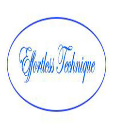

INVITATION TO OUR NEW MEMBERS
Need more people who can sing or play music.
Preference for an artist to sing a medley of old time favorites.
Mass starts at 6pm and finishes about 10 to 7
To take part, please call Merle Trembath 0418882633 anytime
Need more people who can sing or play music.
Preference for an artist to sing a medley of old time favorites.
Mass starts at 6pm and finishes about 10 to 7
To take part, please call Merle Trembath 0418882633 anytime

Looking to book performers/musicians/entertainers for a family friendly festival at the Ingham Tyto Wetlands on the 23rd of May
Looking for appropriate acts. We are looking for a wide variety of bands and entertainers from our local and surrounding areas.
Deadline for initial submissions 29 March 2015.
Artists will need to be insured for public liability.
If you are interested please email details, examples or links to your work and a quote including travel expenses for performing at the event to the Event Stage Manager Emile Griffiths -
mutec.audio@gmail.com
Visit rouvasacademyofsinging.com.au
or phone John 0404 044 823

We need a part-time Office Administrator.
This is a long-term, part time, part-paid position (all conditions are negotiable).
Experience with not-for profit organisations would be an advantage.
We use MYOB and Microsoft Office, mostly Word and Excel.
For more information -
-- email us --
or phone Jeff 4724 2086
Posted 15-March-2015
Dear fellow musos
I sing and play keyboard (when I have one).
Blues/jazz songs mostly.
-- Please email Ada Knowles --
This is a long-term, part time, part-paid position (all conditions are negotiable).
Experience with not-for profit organisations would be an advantage.
We use MYOB and Microsoft Office, mostly Word and Excel.
For more information -
-- email us --
or phone Jeff 4724 2086
Posted 15-March-2015
Dear fellow musos
I sing and play keyboard (when I have one).
Blues/jazz songs mostly.
-- Please email Ada Knowles --

MUSIC TEACHING BY EFFORTLESS TECHNIQUE
Are you struggling to master sections of your pieces at tempo?
Are you stressing that you won’t be prepared because you don’t have enough time to practice?
Would you like to learn efficient and effective practice skills and strategies
we are ready to help you play those difficult sections with confidence and ease and to the best of your ability?
Visit us on Facebook EMAIL CASSANDRA FIXTER OR PHONE -0423 626 501 or phone 0423 626 501
Are you stressing that you won’t be prepared because you don’t have enough time to practice?
Would you like to learn efficient and effective practice skills and strategies
we are ready to help you play those difficult sections with confidence and ease and to the best of your ability?
Visit us on Facebook EMAIL CASSANDRA FIXTER OR PHONE -0423 626 501 or phone 0423 626 501

THURINGOWA BRASS BAND
A friendly not- for-profit community band that provides light entertainment across North Queensland as well as regularly competing in State and National contests.
We are seeking brass and percussion players to bolster our ranks.
If this sounds like you...
FOR MORE INFORMATION PLEASE CONTACT OUR SECRETARY ON 0419 667 933 .
A friendly not- for-profit community band that provides light entertainment across North Queensland as well as regularly competing in State and National contests.
We are seeking brass and percussion players to bolster our ranks.
If this sounds like you...
FOR MORE INFORMATION PLEASE CONTACT OUR SECRETARY ON 0419 667 933 .

TOWNSVILLE EISTEDDFOD - VOLUNTEERS REQUIRED - September 2017
The Eisteddfod is the biggest performing arts event on the Townsville calendar. It runs for 19 days and presents about 17,400 individual performances!
It is run entirely by volunteers and we are always ready to welcome new helpers!
SEEING TO WELCOME YOU
The Eisteddfod is the biggest performing arts event on the Townsville calendar. It runs for 19 days and presents about 17,400 individual performances!
It is run entirely by volunteers and we are always ready to welcome new helpers!
SEEING TO WELCOME YOU